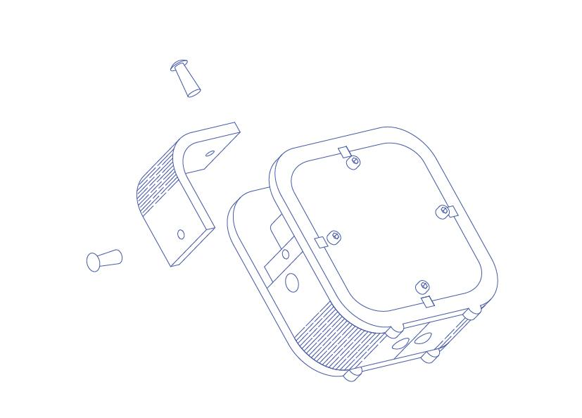

Do not go gentle into that good night,
Old age should burn and rave at close of day,
Rage, rage against the dying of the light.
With this kit, you can assemble a wooden clock running backwards.
When making this clock, you would learn the ingredients of a clock, and feel the possibility of wood.
SKU：110060052
NOTE: AA battery is not included in this kit, please find one before assembling.
Fix the clock to front board with circular tapes.
The hands of clock is quite long for you to DIY its shape.
Cut them through Scissors.
However, please make sure that minute hand is longer than hour hand and shorter than second hand.
Rotate all hands to 12, and give the clock an AA battery to make time flow. Yes, it flows towards back years.

Add rear board to front board with spacer support and pillar boards. Fix them with inner hexgon screws.
NOTE: Do not make the screws too tight.

The angle board can be bended to 90°. Fix them to corners of the body with rivets.
If the time is not that accurate, you can rotate minute hand to regulate, some kind like a grandfather’s clock.